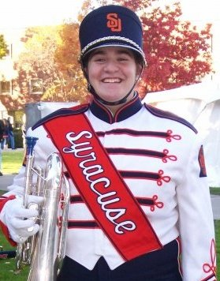
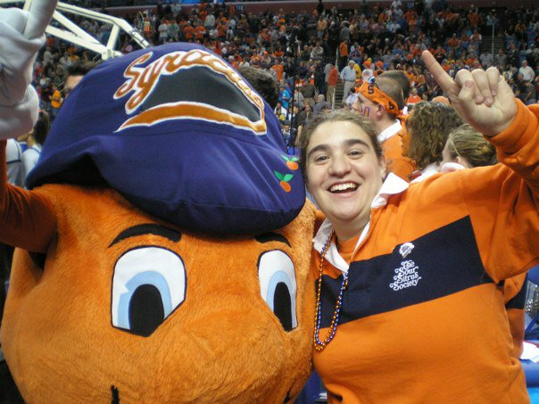
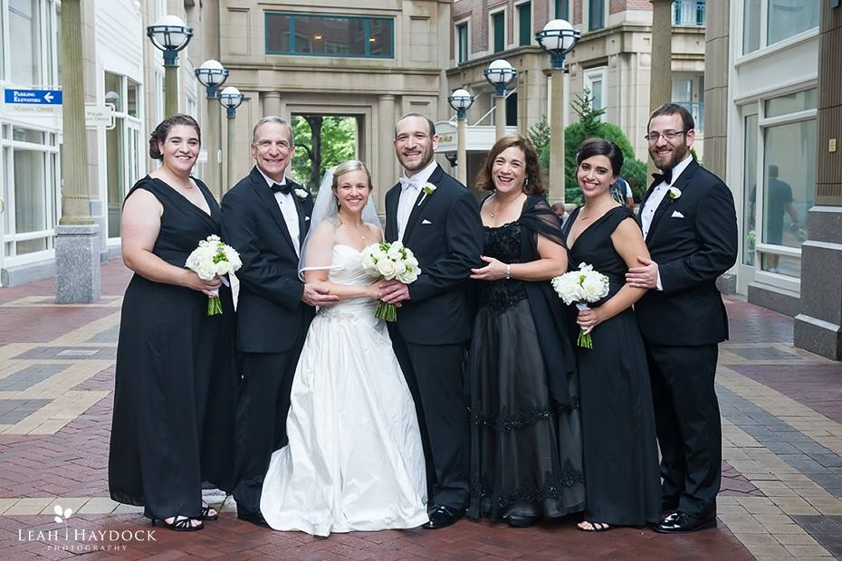

Hello, my name is Tracy Isman and I am web development student at Startup Institute Summer 2016. This is my foray into making a website. I taught high school math for four years. Two years into my teaching, I was given the Advanced Programming course, which taught in Java. I taught that for two years, and that is where I discovered that I liked, and was pretty good at, programming.
When I was in high school, I had a rebellious phase where I didn't take too many regular pictures of myself!
This is me during my freshman year of college in my Syracuse University Marching Band (SUMB) uniform.
When I was in high school, I did track and field. My senior year of high school track, I made it to States. I competed with the other top shotputters in Massachusetts. In this competition, I came in fifth! Check out the records below:
Track Records
In college, I went to many Syracuse University sporting events. Because I went to so many events, I was able to take pictures with Otto the Orange, Syracuse University's mascot.
From left to right, Tracy (me), Marshall (dad), Emily (Mike's wife), Mike (oldest brother), Vicki (mom), Robyn (Dave's wife), and Dave (older brother)